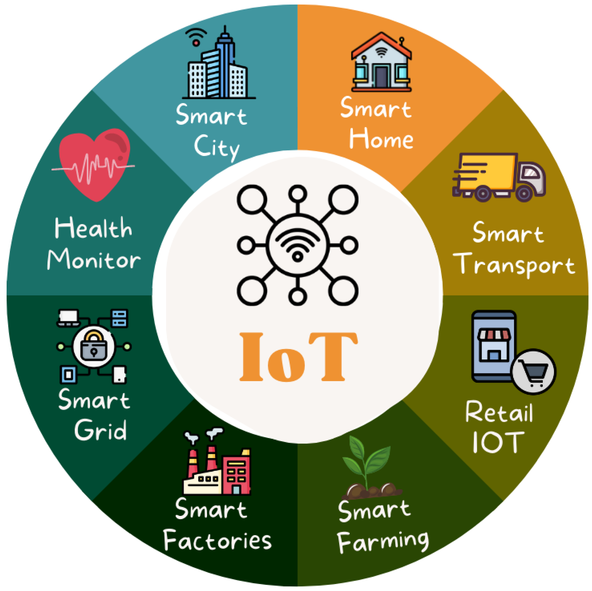
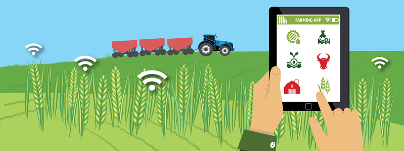
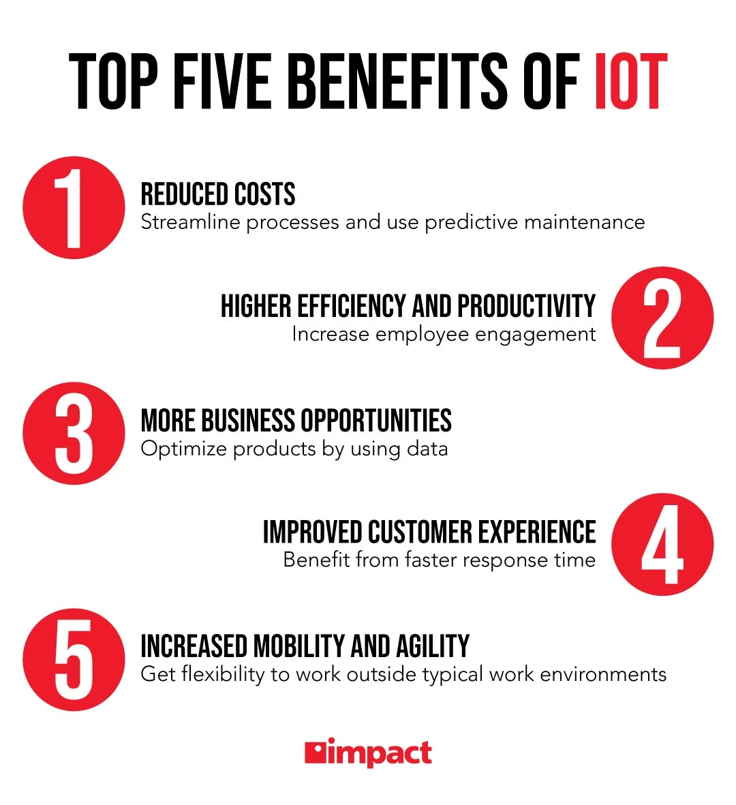

📌 Introduction
Agriculture is the backbone of rural India. With challenges like water scarcity and climate change, IoT (Internet of Things) is empowering farmers to take control with smart, data-driven solutions. From soil monitoring to predictive analytics, technology is reshaping rural farming.

🚜 What is IoT in Agriculture?
- Monitor soil moisture, temperature, and pH levels
- Automate irrigation using real-time data
- Track weather conditions and forecast patterns
- Analyze crop health with sensors and drones

🌱 Real-World Impact in Rural India
Smart Irrigation (Maharashtra): Moisture sensors reduce water usage by 40% by automating pumps.
Livestock Monitoring (Punjab): IoT collars monitor cattle health and send SMS alerts to farmers.
Climate-Smart Farming (Andhra Pradesh): IoT weather stations help in predicting rainfall and reducing crop failures.
🧪 Simple IoT Project Ideas
- Soil Monitoring System: ESP8266 + DHT11 + Blynk app for mobile tracking
- Auto Irrigation: Arduino + Relay + Soil Moisture Sensor for automatic watering
- Crop Theft Alert: PIR Sensor + GSM module for SMS alerts
- Weather Dashboard: BMP280 + NodeMCU + ThingSpeak for online visualization

🌍 Why It Matters
- Reduced costs
- Higher efficiency and productivity
- More business opportunities
- Improved customer experience
- Increased mobility and agility
🚀 Final Thoughts
IoT is more than just circuits and code — it's a digital revolution transforming Indian agriculture. With the right tools, every small farmer can become a smart farmer.
🌟 “The farmer of tomorrow is a tech innovator today.”